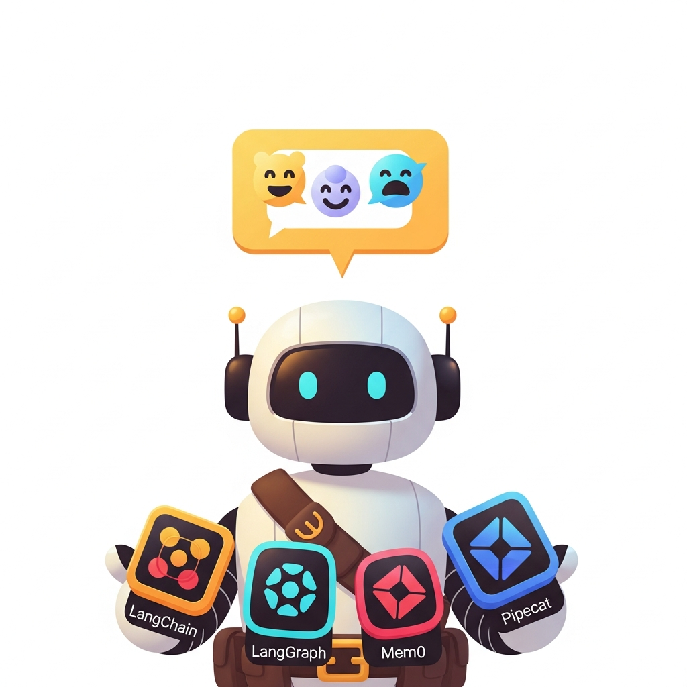

Big Picture
The conversational AI ecosystem has its own stack of platforms (Botpress, Rasa, Dialogflow), libraries (LangChain conversation memory, OpenAI Assistants, Anthropic prompts), datasets (PersonaChat, MultiWOZ), models, and communities. This chapter is the practical reference.
Sections in This Chapter
- 41.1 Platforms Cloud studios (Dialogflow CX, Lex, Voiceflow), self-hosted stacks (Rasa, Botpress), voice-first runtimes (LiveKit, Pipecat, Vocode), character platforms, and enterprise contact-center suites compared by team and channel.
- 41.2 Libraries and Frameworks Conversation memory primitives, orchestration frameworks (LangGraph, OpenAI Assistants, LlamaIndex chat engines), chat UI toolkits (Chainlit, Vercel AI SDK), and voice-agent runtimes for 2026.
- 41.3 Datasets and Benchmarks MultiWOZ, PersonaChat, BlendedSkillTalk, DSTC, MT-Bench, AlpacaEval, LMSYS Chatbot Arena, HarmBench, and the rest of the conversational AI evaluation stack.
- 41.4 Models Frontier chat APIs (Claude, GPT-4o, Gemini), voice-aware models (GPT-4o Realtime, Sonic, Moshi), open chat weights (Llama, Mistral, Qwen, DeepSeek), and persona models, picked by quality, latency, openness, and tuning style.
- 41.5 External Reading and Communities Jurafsky and Martin's dialogue chapter, foundational papers (InstructGPT, Constitutional AI), vendor engineering blogs, voice-agent Discords, ACL/EMNLP/DSTC venues, and curated paths into the field.